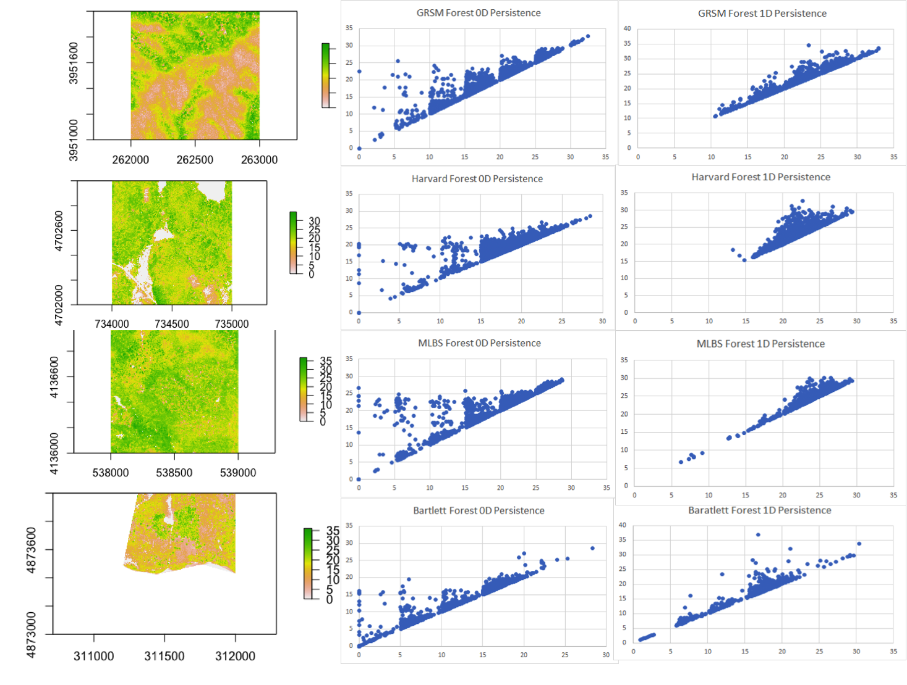

Sam Pease
I am a fourth year Ph.D candidate in Mathematics at Rutgers University in Newark. I am working with my Advisor, Chen Wan on the GGP conjecture for general spin groups.
Before this I received my Bachelors in Science in Mathematics and Computer Science at Duke University. There I graduated with honors for my senior thesis on Computing Values of Symmetric Square L-Functions using Ichino’s Pullback Formula. This work was completed under the guidance of my advisor Aaron Pollack.
Beyond the realm of pure math, I am driven by an interest in machine learning. I am eager to leverage my strong foundation in mathematical principles and my extensive research experience to contribute to the development of new innovative and inclusive systems as our would becomes increasingly intertwined with technology.
Research
I am interested in the local side of the Langlands program especially on how properties of algebraic objects affect the analytic properties of representations on them. I am currently working on the Gan Gross Prasad conjecture for the general spin group. A current draft of my thesis is below which contains a draft of the multiplicity one conjecture in the special orthogonal case and will eventually contain a local trace formula.
Previously I focused more on the analytic side of things and studied modular forms. In my undergraduate thesis I studied Siegel Eisenstein Series. Ichino has shown that certain values of some symmetric square L-functions can be expressed as the inner product of a Saito-Kurokawa lift. It is also known that there is a pullback formula which expresses Saito-Kurokawa lifts in terms of genus one cusp forms. We can then take advantage of the finite dimensionality of the vector space of cusp forms to calculate our desired value with simple linear algebra. This was done in Sage.
Papers
The multiplicity conjecture for Gan-Gross-Prasad
pairs in the Special Orthogonal Case
Computing Values of Symmetric Square L-Functions using Ichino’s Pullback
Formula
Constuctible Numbers and Regular n-gons
Presentations
Computing Values of Symmetric Square L-Functions using Ichino’s Pullback Formula
Projects
Cat Identification with Neural Network From Scratch
Sam Pease

Topology as a Tool to Differentiate Canopy Architecture in North American Forests
Eva Arroyo, Sam Pease, Nikita Zemlevskiy

Remote Wind Turbine Monitoring System
Sam Pease, Martin Cala
I volunteered at WindAid, an international NGO based in Peru, the summer of 2017. While there we first worked under the engineers in their workshop to construct the wind turbine picture below for a rural home with no electricity. After this Martin and I begin R+D for a prototype of a monitoring system to remotely report windspeed, power generation, and battery capacity, at all of the wind turbine. The intent was to provide useful feedback to the engineers when problems arose as turbines were typically very remote and their owners not tech savvy enough to provide trouble shooting details. We succeeded in making a working prototype and handed it off to the permanent engineers.